Do you dare to explore the unknown?
Horror films thrive on uncertainty. When we don’t know what lurks in the shadows or what the antagonist is capable of, our imagination fills in the gaps with terrifying possibilities. The fear of the unknown triggers deep psychological discomfort and heightens suspense.
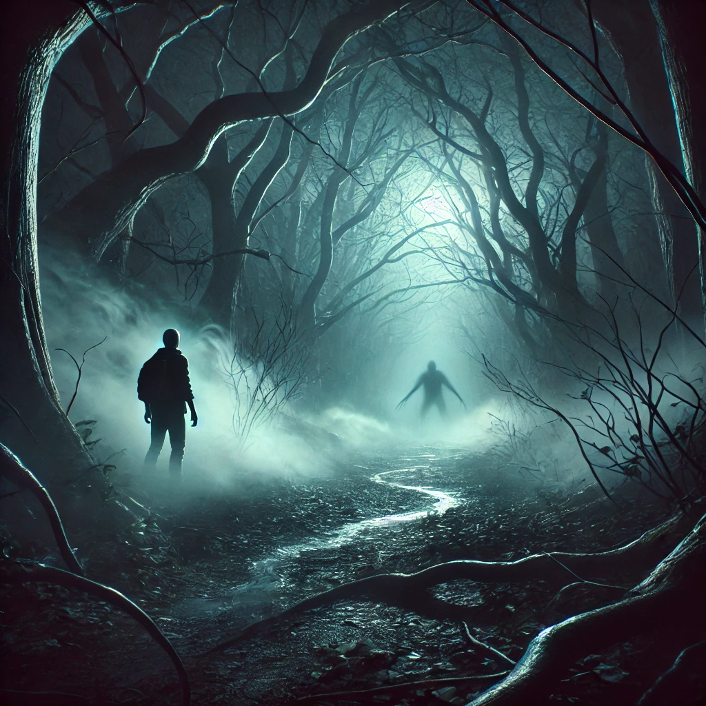Darkness represents the absence of knowledge and security. In horror films, it is used to obscure threats, making the audience feel vulnerable. Shadows and dim lighting enhance the sense of danger and anticipation.
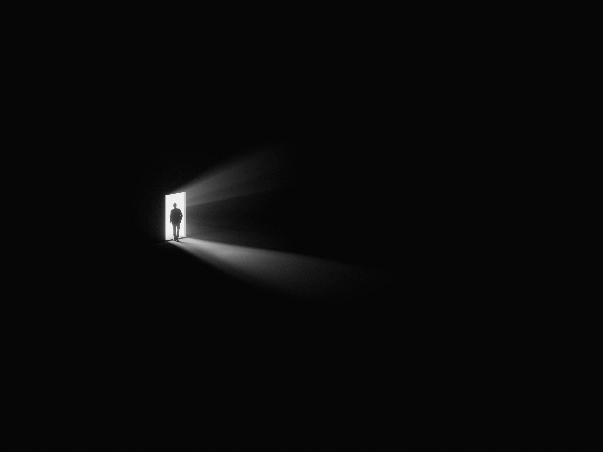Many horror films exploit religious themes such as demonic possession, curses, and divine punishment. These elements evoke existential fear by challenging our beliefs about good and evil, salvation, and damnation.
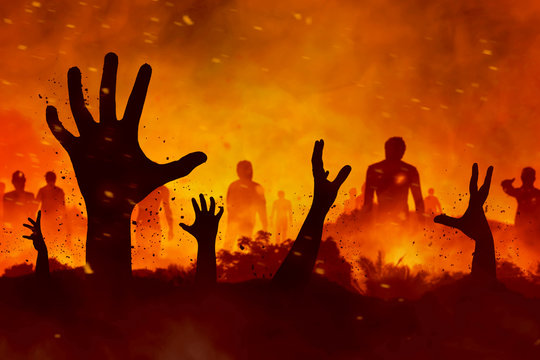Ghosts, demons, and other supernatural entities introduce threats beyond human control or understanding. The idea that these forces cannot be reasoned with makes them especially terrifying, as they defy logic and reality.
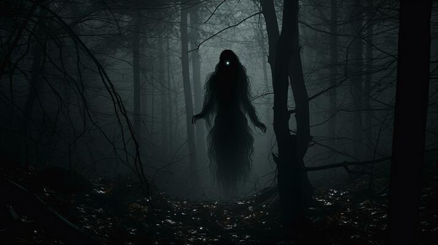Jump scares rely on sudden visual and auditory shocks to startle the audience. This technique triggers an automatic fight-or-flight response, creating an intense and immediate reaction. While often criticized as a cheap tactic, when used effectively, jump scares can heighten a film’s impact.
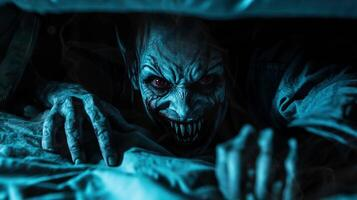Building suspense is a key psychological tool in horror. Long silences, eerie music, and slow-moving camera shots make the audience anticipate danger, keeping them on edge even before anything happens.
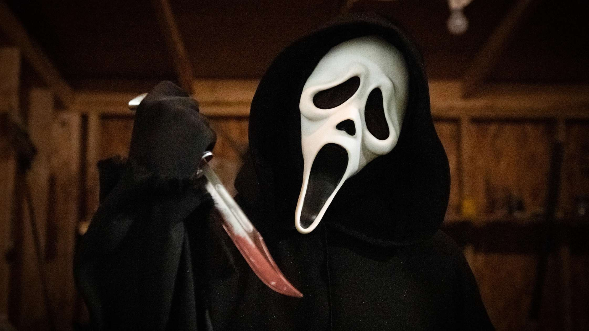Playing with light and darkness is a classic horror technique. Strong contrasts between bright and shadowed areas create mystery and fear, while flickering lights or sudden blackouts amplify the sense of impending danger.
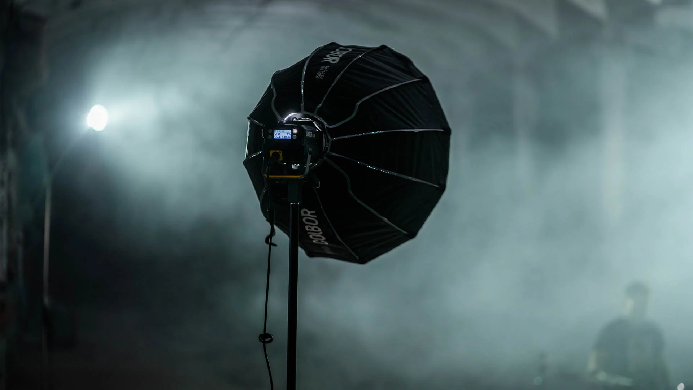Horror films use symbolic imagery to evoke deeper fears. Objects like broken dolls, abandoned houses, and blood-stained mirrors often represent trauma, death, or hidden threats, adding layers of meaning to the film.
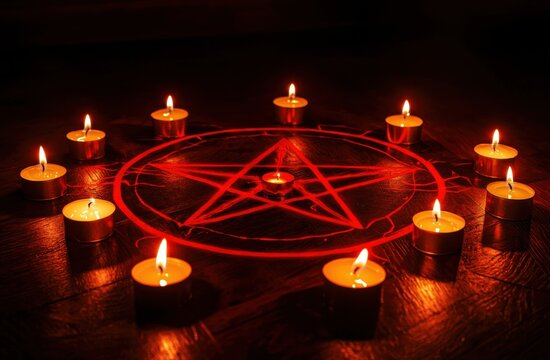Creepy soundtracks, unsettling whispers, and sudden loud noises manipulate the audience’s emotions. The right use of sound can make a simple scene feel disturbing or turn an unseen presence into something truly menacing.
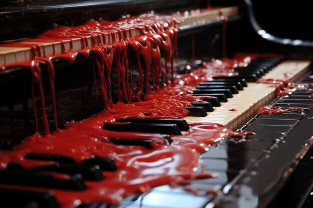Many horror films force characters to make impossible choices—sacrificing others for survival, confronting their darkest fears, or betraying their morals. These dilemmas intensify the psychological horror by making viewers question what they would do in such situations.
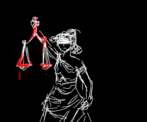A well-developed villain with a complex backstory is more terrifying than a mindless monster. Exploring the antagonist’s psychology—whether they are a serial killer, a demon, or an outcast—makes them feel real and unsettling.
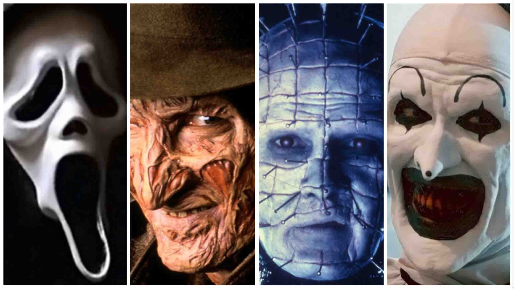Horror films tap into universal fears such as death, isolation, insanity, and losing control. These primal anxieties resonate across cultures and create a deep emotional impact on the audience.
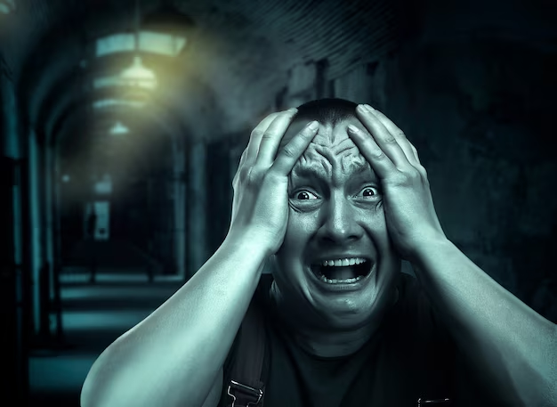Many horror films focus on the protagonist’s mental decline as they experience extreme stress, paranoia, and fear. Watching their psychological unraveling makes the horror feel more intense and realistic.
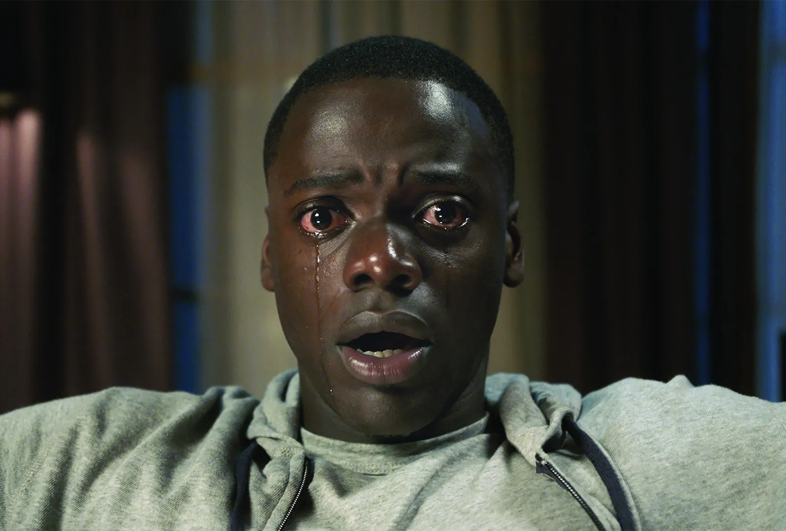Horror often distorts familiar things—dolls, children, or ordinary homes—making them eerie and unsettling. This technique, rooted in Freud’s concept of "the uncanny," plays with the fear of something being almost, but not quite, normal.
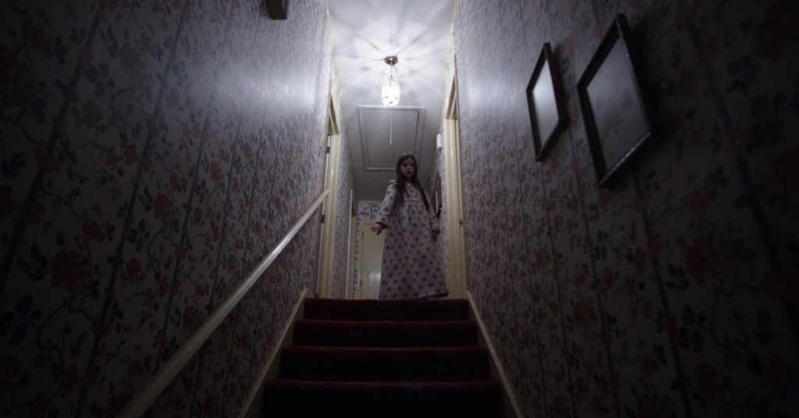Horror films do more than entertain—they affect viewers on a deep psychological level. Some experience lingering fear, nightmares, or heightened anxiety after watching a particularly disturbing film. The genre forces audiences to confront their fears in a safe yet emotionally intense way.
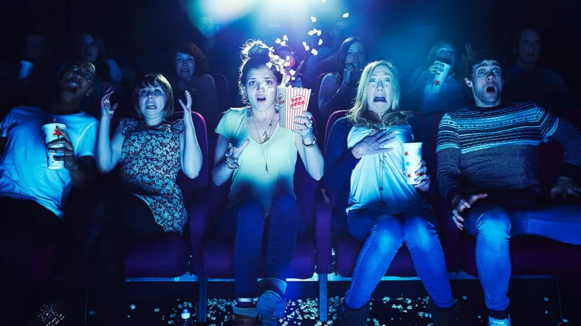